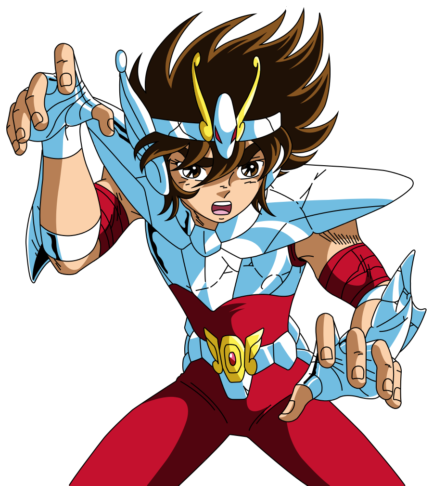

Seiya (星矢, Seiya) es el personaje principal de la serie de manga y anime Saint Seiya y el Saint de Pegasus durante las Guerras Santas en el siglo XX hasta antes de los eventos ocurridos en Next Dimension. Es la reencarnación del pasado Bronze Saint de Pegasus Tenma y del "Primer Pegasus", el primer humano en herir al dios Hades desde la era mitológica.
Seiya Seiya De Pegasus 